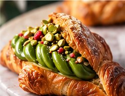

Aya Matcha Paste
「彩」抹茶ペースト
鮮やかな緑と、抹茶らしい香り。焼き菓子の退色抑制に高い効果を確認しています。抹茶パウダーとの併用で、色と風味をさらに引き立てます。


抹茶の、その美しさを、もっと先へ。
近江・土山の加工技術から生まれた、日本緑茶の自社ブランドです。
時間が経っても、焼いても、冷やしても。抹茶の美しさを、そのままに。
「彩」抹茶ペーストは、厳選した国産素材を丁寧に仕込み、銅鍋でじっくりと炊き上げたプレミアムなペーストです。素材本来の鮮やかな色合いと豊かな香りを閉じ込め、お菓子づくりの可能性を広げます。
「彩（あや）」という名前には、お茶が持つ色彩を、お菓子やパン、ドリンクの上でいつまでも美しく残したいという想いを込めました。日本緑茶が長年培ってきた加工の技術を、プロの現場のために磨き上げた自社ブランドです。第一弾の「彩」抹茶ペーストをはじめ、お茶の色と香りを活かした製品を「彩」の名のもとにお届けしていきます。
全国の生産者とつながり、確かな品質の素材を厳選。旬の美味しさをお届けします。
熱伝導性に優れた銅鍋で丁寧に炊き上げ、素材本来の鮮やかな色合いと香りを引き出します。
短時間で均一に加熱することで、素材の色・香り・風味を最大限に保ちます。
洋菓子・和菓子・パン・アイス・ドリンクなど、さまざまなジャンルでご使用いただけます。

時間が経っても色が変わりにくく、鮮やかな緑を保ちます。ショーケースに並ぶ時間が長い商品にも。
均一に混ざりやすく、なめらかな食感と美しい仕上がりに。仕込みの手間も軽くなります。
製菓・製パン・和菓子・ドリンクなど、幅広い用途で安定した品質をお届けします。
製菓（マドレーヌ・蒸しケーキ）において、抹茶・ほうじ茶ペーストの添加が風味と経時的な退色にどう影響するかを確認しました。
| 試験項目 | 官能検査（風味・苦味）／退色確認（当日〜4週間後の外観変化） |
|---|---|
| 配合条件 | ① 粉末単独 2％ ② ペースト単独 5％ ③ 併用 粉末2％＋ペースト3％ |
| 保存条件 | 室温保存、蛍光灯下（継続照射）。包装は透明のものを使用 |

| 配合 | 色の持続（内相） | 風味・苦味 |
|---|---|---|
| 粉末 2％ | 早い段階で退色 | 苦味が強調される |
| ペースト 5％ | マドレーヌで4週間後も鮮やかな発色を維持 蒸しケーキでも2週目まで退色を抑制 | 苦味・香りともに穏やか |
| 粉末 2％＋ペースト 3％ | ◎最も退色を抑制 | ◎濃厚な抹茶の風味としっかりした苦味を両立 |
| 配合 | 色の安定性 | 風味 |
|---|---|---|
| 粉末 2％ | 大きな退色傾向はみられない | — |
| ペースト 5％ | 当日から4週間後まで、最も色が浅い | 風味が弱くなる傾向 |
| 粉末 2％＋ペースト 3％ | ◎最も色が深く、4週間を通して退色なし | ◎香ばしい風味と苦味が最も強い |
ペーストの添加により、粉末単独と比べて顕著な退色抑制を確認。特にマドレーヌなどの焼き菓子で効果が高く、風味の濃さを求める場合は粉末とペーストの併用が最適です。
ペーストと粉末の併用が、試験期間を通して最も色が安定し、退色傾向も最小。味わいの面でも最も強い印象を与え、高品質な商品づくりに有効です。
※自社試験による結果です。配合・製法・保存条件により結果は異なります。試験レポートの詳細は営業担当までお問い合わせください。

デニッシュやクロワッサンに。素材の彩りと風味で、特別感のある商品に。

美しい色合いと豊かな香りで、見た目も味わいもワンランク上の仕上がりに。

フルーツやナッツとの相性も良く、華やかなスイーツを演出できます。

和菓子はもちろん、アイスやドリンクなど、多彩なメニューにご活用いただけます。
業務用の規格・荷姿は、用途やご使用量に合わせてご案内しています。サンプルのご依頼もお気軽にどうぞ。
鮮やかな緑と、抹茶らしい香り。焼き菓子の退色抑制に高い効果を確認しています。抹茶パウダーとの併用で、色と風味をさらに引き立てます。
香ばしい焙煎香を、ペーストで手軽に。ほうじ茶パウダーとの併用で、色の深みと香ばしさが4週間を通して安定しました。
製菓・製パン・和菓子・飲料メーカー様、飲食店様からのご相談を承ります。用途や配合に合わせた加工もお気軽にお問い合わせください。
TEL0748-67-0215